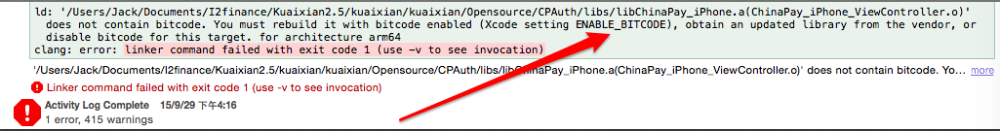
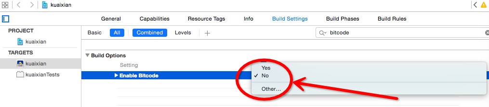

最近用XCode 7 也有一段时间了，每次IDE升级都会产生一系列的问题，因此，小计一下，希望朋友们在遇到这些问题时能轻松应对。
问题一：

解决办法：

问题二：
iOS模拟器出现一大堆UUID，特别的烦人。以下是解决这个恼人问题的方法，希望能帮到大家：
- 关闭Xcode 和 模拟器；
- $ sudo killall -9 com.apple.CoreSimulator.CoreSimulatorService
- $ rm -rf ~/Library/Developer/CoreSimulator/Devices
- 重启Xcode
问题就这么愉快的解决了。
顺便向大家推荐 Xcode 下本人使用频率较高的几款插件：
1，alcatraz
Package manager for Xcode
http://alcatraz.io
https://github.com/supermarin/Alcatraz
xcode插件管理工具
2，VVDocumenter-Xcode
3，KSImageNamed-Xcode
大家可以用alcatraz搜索自己喜欢的插件